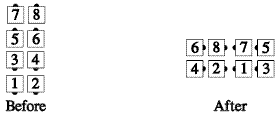

From anywhere Cloverleaf can be done (e.g., completed double pass thru formation): The leaders Half Sashay, blending into a Cloverleaf. The trailers step forward and also Half Sashay blending into a Cloverleaf, to follow their respective leaders. In both cases, the belle crosses in front of the beau. [This definition is included only for the purpose of defining Cross Clover and (Anything). It is not to be used at Advanced as a separate call.]
